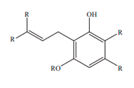

CBG
Primary Cannabinoid About Cannabigerol (CBG)
Cannabigerol, or CBG is a non-intoxicating, minor cannabinoid usually measuring under 1% in most strains with great medical promise. Sometimes called the “stem cell cannabinoid,” CBG happens to be the precursor to THC, CBD, and CBCA, as these 3 molecules all have their beginnings as CBGA, until enzymes within the cannabis plant convert it to one of the three cannabinoids. As a result, higher THC quantities will mean lesser amounts of CBG and CBD (and vice versa) as a natural function of how these compounds are synthesized within the cannabis plant.
With a boiling point of 126˚Fahrenheit, CBG has the lowest boiling point of all the cannabinoids. As such, individuals who seek to unlock the benefits of this compound may be best served using a vaperizer on a lower heat setting. Nontheless, CBG is said to stimulate bone and brain cell growth and is thought to be particularly effective for treating glaucoma, due to its ability to reduce intraocular pressure.
CBG is a powerful vasodilator with neuroprotective effects, shown to protect neurons in the brain from nerve cell degeneration. Experiments demonstrated it to be effective in decreasing the inflammation characteristic of inflammatory bowel disease and it shows great promise as a cure for colorectal cancer, having inhibited the growth of cancer cells and tumors in various experiments. CBG is also an effective antibacterial agent; topical formulations of cannabis rich in CBG have been effective in treating skin infections for many years. Recent studies have shown a purified form of CBG (devoid of any THC) to be a very effective appetite stimulant and studies looking at bladder dysfunction disorders found that CBG may hold an important key to inhibiting unwanted muscle contractions and prevent bladder dysfunction.
Laboratory test results correlate to strain attributes and subsequently, to the recommendations provided by StrainRx. A strain rich in CBG will exhibit higher values for relieving eye pressure, stress and anxiety, spasms or a lack of appetite. CBG has also been shown to be effective against certain types of pain.
Looking for a high CBG strain? Use our Cannabis Search Engine to find it near you!